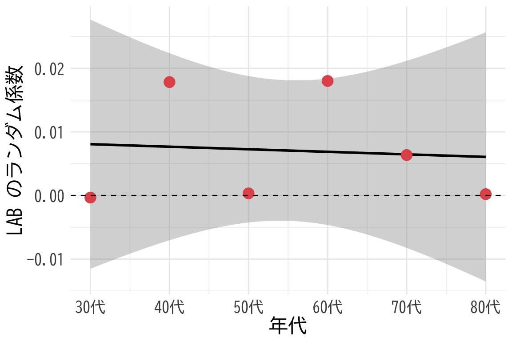
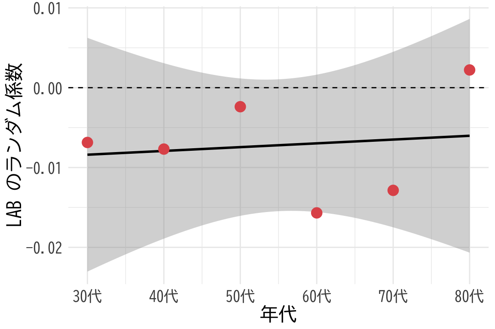
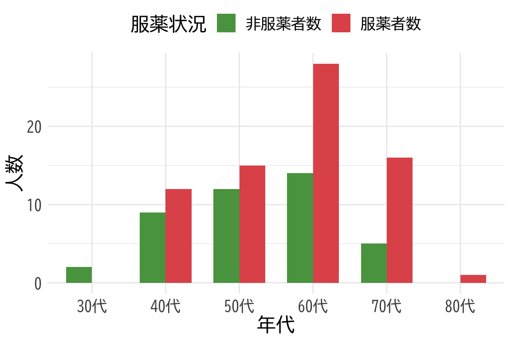

弘前データ１：法定検診との関係
ここではまずデータの視覚化を行い，概要をつかむ． 次節から階層モデリングを目指す．
4/27/2025
LAB との関係に服薬という交絡がある
ここでは BP と LAB の関係のモデリングを行う． hirosaki3.qmd では \(\Sigma\)-FLC と LOX-1 の関係をモデリングする．
library(readxl)
library(knitr)
df <- readRDS("df.rds")
df <- df[is.na(df$`BP備考`), ]
kable(head(df))| id | age | sex | Weight | BP | FLCΣ | BP備考 | 判別式 | LOX | LAB | LOX_Index | type | diversity | BMI | med | med_col | 年代 | 活気 | イライラ感 | 疲労感 | 不安感 | 抑うつ感 | |
|---|---|---|---|---|---|---|---|---|---|---|---|---|---|---|---|---|---|---|---|---|---|---|
| 3 | 4 | 46 | 1 | 76.3 | 1.10 | 1.95 | NA | -2.974 | 136 | 3.8 | 517 | B | 2 | 26.0 | 2 | NA | 40代 | 2 | 3 | 2 | 3 | 2 |
| 5 | 6 | 30 | 1 | 59.5 | 0.76 | 0.64 | NA | -2.776 | 46 | 2.2 | 101 | B | 2 | 19.5 | 2 | NA | 30代 | 3 | 5 | 4 | 5 | 4 |
| 6 | 7 | 51 | 1 | 76.6 | 1.69 | 2.58 | NA | -2.377 | 78 | 3.2 | 250 | B | 2 | 25.5 | 2 | NA | 50代 | 3 | 3 | 3 | 3 | 2 |
| 7 | 8 | 47 | 2 | 43.2 | 0.56 | 0.55 | NA | -3.048 | 40 | 2.7 | 108 | B | 2 | 16.7 | 2 | NA | 40代 | 2 | 1 | 2 | 2 | 1 |
| 9 | 10 | 39 | 1 | 61.9 | 0.52 | 0.64 | NA | -3.165 | 54 | 2.4 | 130 | B | 2 | 21.3 | 2 | NA | 30代 | 3 | 3 | 3 | 3 | 3 |
| 10 | 11 | 55 | 1 | 61.0 | 0.89 | 2.64 | NA | -3.708 | 60 | 3.1 | 186 | E | 1 | 22.9 | 1 | NA | 50代 | 3 | 2 | 2 | 1 | 1 |
df_IRT_long <- readRDS("df_IRT_long.rds")
df_IRT_long <- df_IRT_long[df_IRT_long$FLCΣ > 0, ]
kable(head(df_IRT_long))| id | BP | FLCΣ | type | diversity | item | response | res | |
|---|---|---|---|---|---|---|---|---|
| 1 | 2 | 0.47 | 0.81 | B | 2 | 活気 | 3 | 0 |
| 2 | 2 | 0.47 | 0.81 | B | 2 | イライラ感 | 3 | 0 |
| 3 | 2 | 0.47 | 0.81 | B | 2 | 疲労感 | 4 | 1 |
| 4 | 2 | 0.47 | 0.81 | B | 2 | 不安感 | 3 | 0 |
| 5 | 2 | 0.47 | 0.81 | B | 2 | 抑うつ感 | 3 | 0 |
| 11 | 4 | 1.10 | 1.95 | B | 2 | 活気 | 2 | 0 |
med 変数じゃダメかも？library(brms)
formula <- bf(
BP ~ 1 + (LAB | med)
)
fit <- brm(
formula,
data = df,
family = gaussian(),
chains = 4,
iter = 8000,
cores = 4
)ranef(fit)$med, , Intercept
Estimate Est.Error Q2.5 Q97.5
1 0.01348323 0.2415198 -0.4906938 0.5614322
2 -0.01397653 0.2411504 -0.5567695 0.5141655
, , LAB
Estimate Est.Error Q2.5 Q97.5
1 0.04144633 0.02593580 -0.005287137 0.09257852
2 0.03199638 0.02622403 -0.013490186 0.08640192med 変数だが年代でも変えてみるlibrary(brms)
formula <- bf(
BP ~ 1 + (1 + LAB | med_col:年代)
)
fit <- brm(
formula,
data = df,
family = gaussian(),
chains = 4,
iter = 8000,
cores = 4
)# データフレームの作成
plot_data <- data.frame(
年代 = 1:12, # 数値として扱う（20代=1, 30代=2, ...）
効果 = ranef(fit)$`med_col:年代`[,1,"LAB"]
)
# プロット
ggplot(plot_data[1:6,], aes(x = 年代, y = 効果)) +
# 回帰直線
geom_smooth(method = "lm", color = "black", se = TRUE) +
# 大きな赤い点
geom_point(color = "#E15759", size = 4) +
theme_minimal() +
labs(title = NULL,
x = "年代",
y = "LAB のランダム係数") +
theme(
text = element_text(family = "BIZUDGothic-Regular", size = 16),
# axis.text = element_text(size = 34),
# axis.title = element_text(size = 45),
# plot.title = element_text(size = 45)
) +
geom_hline(yintercept = 0, linetype = "dashed", color = "black") +
scale_x_continuous(
breaks = 1:6,
labels = c("30代", "40代", "50代", "60代", "70代", "80代")
)`geom_smooth()` using formula = 'y ~ x' # coord_fixed(ratio = 70)
ggplot(plot_data[7:12,], aes(x = 年代, y = 効果)) +
# 回帰直線
geom_smooth(method = "lm", color = "black", se = TRUE) +
# 大きな赤い点
geom_point(color = "#E15759", size = 4) +
theme_minimal() +
labs(title = NULL,
x = "年代",
y = "LAB のランダム係数") +
theme(
text = element_text(family = "BIZUDGothic-Regular", size = 16),
# axis.text = element_text(size = 34),
# axis.title = element_text(size = 45),
# plot.title = element_text(size = 45)
) +
geom_hline(yintercept = 0, linetype = "dashed", color = "black") +
scale_x_continuous(
breaks = 7:12,
labels = c("30代", "40代", "50代", "60代", "70代", "80代")
)`geom_smooth()` using formula = 'y ~ x' # coord_fixed(ratio = 70)

sum(!is.na(df$med_col))[1] 114sum(df$med_col == "あり", na.rm = TRUE)[1] 72sum(df$med_col == "なし", na.rm = TRUE)[1] 42library(dplyr)
次のパッケージを付け加えます: 'dplyr' 以下のオブジェクトは 'package:stats' からマスクされています:
filter, lag 以下のオブジェクトは 'package:base' からマスクされています:
intersect, setdiff, setequal, unionlibrary(ggplot2)
library(tidyr)
# 年代別の服薬者数と非服薬者数をカウント
med_counts <- df %>%
filter(!is.na(med_col)) %>%
group_by(年代) %>%
summarise(
服薬者数 = sum(med_col == "あり", na.rm = TRUE),
非服薬者数 = sum(med_col == "なし", na.rm = TRUE)
) %>%
# 長い形式に変換
pivot_longer(
cols = c(服薬者数, 非服薬者数),
names_to = "服薬状況",
values_to = "人数"
)
# 統合されたプロット
ggplot(med_counts, aes(x = 年代, y = 人数, fill = 服薬状況)) +
geom_bar(stat = "identity", position = "dodge", width = 0.7) +
scale_fill_manual(values = c("服薬者数" = "#E15759", "非服薬者数" = "#59A14F")) +
theme_minimal() +
labs(title = NULL,
x = "年代",
y = "人数",
fill = "服薬状況") +
theme(
text = element_text(family = "BIZUDGothic-Regular", size = 16),
legend.position = "top"
)